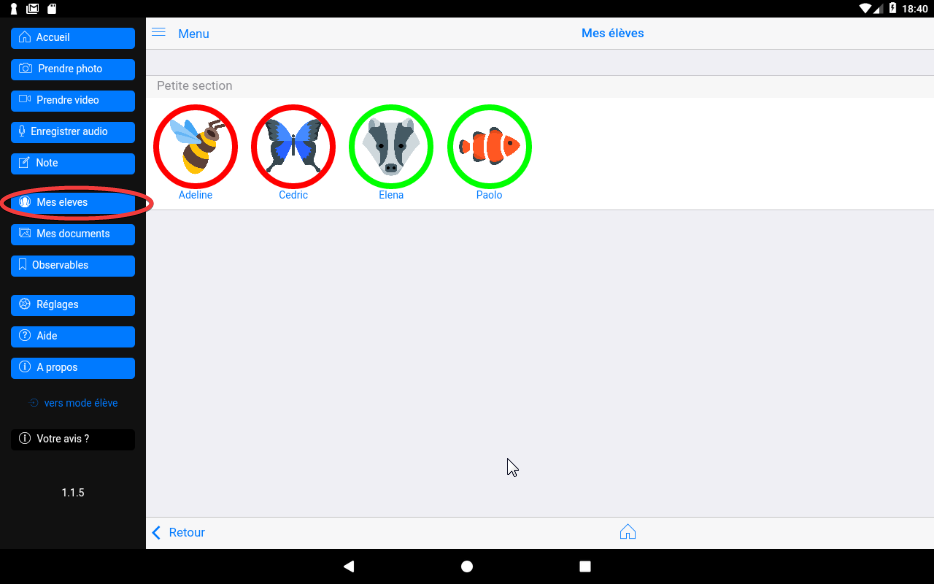
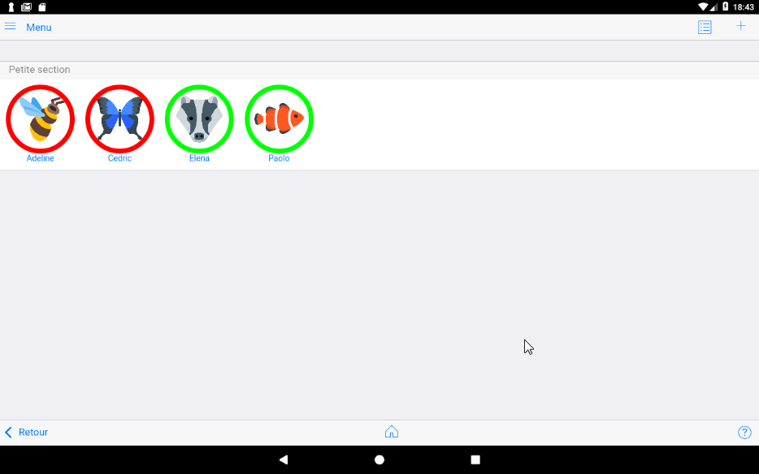
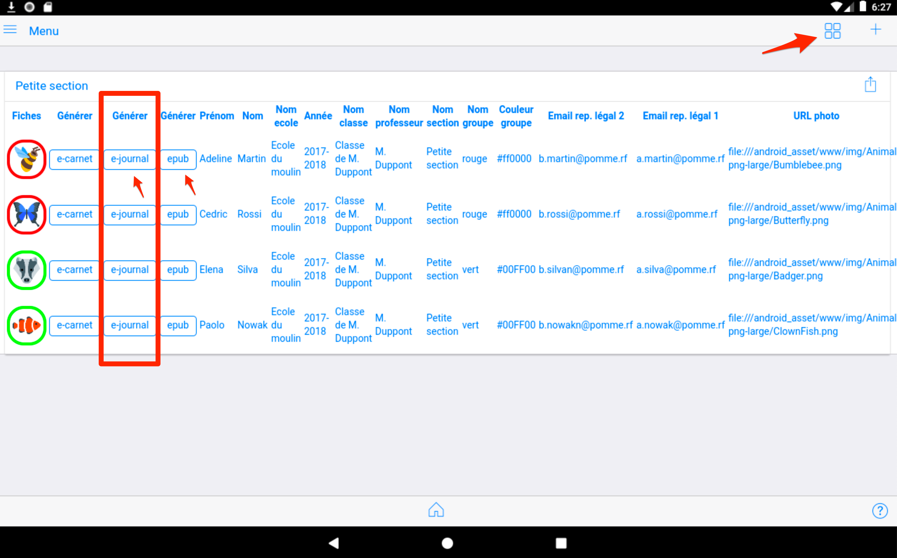
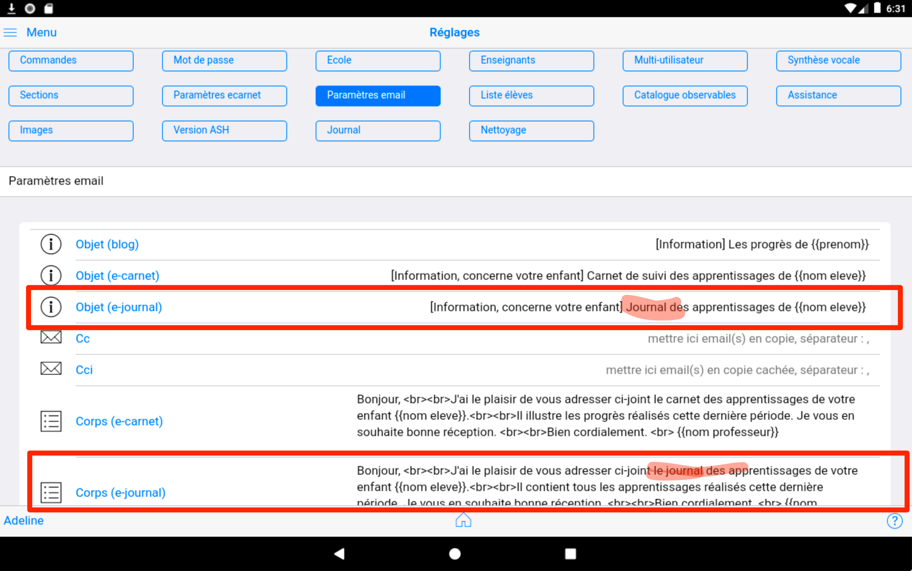

Mes élèves¶
Mode mosaique¶

Ce bouton permet d'afficher la liste complète des élèves de la classe. C'est la liste associée à l'enseignant désigné dans la page "réglages".

Mode liste¶
Ce mode d'affichage apporte des raccourcis sur les commandes de production
Dans ce mode, chaque élève possède un bouton "prod" affiché en vert ou en rouge
- Bouton vert : indique que l'élève sera inclus dans la production de tous les e-carnets, e-journaux ou epub. Cliquer sur ce bouton permet de le passer en rouge.
- Bouton rouge : Désactive l'élève dans la production de tous les e-carnets, e-journaux ou epub.
Ce bouton sert à dépanner la production de tous les fichiers lorsqu'un élève, pour une raison ou une autre, fait planter la production de tous les autres fichiers.
Générer un e-carnet¶

Voir le chapitre correspondant : Générer un e-carnet
Générer un e-journal¶
Cette fonctionnalité nouvelle depuis la version 1.8.2 est une "version spéciale" du e-carnet qui permet :
- de produire une variante du e-carnet basée sur la restitution chronologique des traces et non plus par observable.
- de générer une variante du e-carnet "multilingue".


En effet, il est maintenant possible de changer de référentiel d'un jour ou d'un cours sur l'autre...
Le cas d'usage est celui des classes multilingue.
L'enseignant de la langue étrangère change de référentiel avant son intervention en classe. Des lors toutes les traces qu'il va capturer poourront être associées à son référentiel, dans sa langue.
Le retour à la langue principale s'effectue par le chargement du référentiel correspondant.
Le e-journal restituera toutes les traces avec observables, quelle que soit la langue et donc le référrentiel utilisé.
Le e-carnet, lui, ne restituera que les traces associées au référentiel courant, lors de la production du e-carnet.
La différence est que le e-carnet pourra mettre en évidence (avec une suite de photos consécutives) un progres pour un observable donné, alors que le e-journal contiendra toutes les traces triées par ordre chronologique (sans regroupement par observable).
Extrait d'un e-journal produit à partir d'un référentiel personnalisé avec l'outil referentiel builder. Ici Français/Anglais :

Générer un fichier epub¶
les fichiers au format ePub générés par l’application. Le format ePub est un standard ouvert pour les livres numériques, compatible avec la plupart des liseuses, tablettes et applications de lecture.
Usages du fichier ePub¶
- Lecture hors ligne : Permet aux parents ou enseignants de consulter le carnet ou le journal de l’élève sans connexion Internet, sur n’importe quel appareil compatible ePub.
- Archivage : Facilite la conservation à long terme des productions des élèves dans un format universel et le transfert entre tablette.
- Partage : Le fichier ePub peut être envoyé par email, partagé via une plateforme pour être transmis aux parents via l'application e-carnet.
- Accessibilité : Les applications de lecture ePub offrent souvent des options d’accessibilité (taille de police, contraste, synthèse vocale).
Génération¶
Pour générer un fichier ePub, utilisez le bouton dédié dans l’interface de l’application. Vous pouvez choisir d’inclure ou non certains élèves, selon leur statut (bouton vert/rouge dans la liste). Le fichier généré reprend la structure du e-carnet ou du e-journal, avec l’ensemble des traces, médias et commentaires associés à chaque élève sélectionné.
Astuce : Vérifiez toujours le contenu du fichier ePub généré sur plusieurs appareils pour garantir la compatibilité et la bonne mise en page.
Pour les curieux, les fichiers epub sont des archives zip contenant ici tous les documents et informations associées à l'élève.